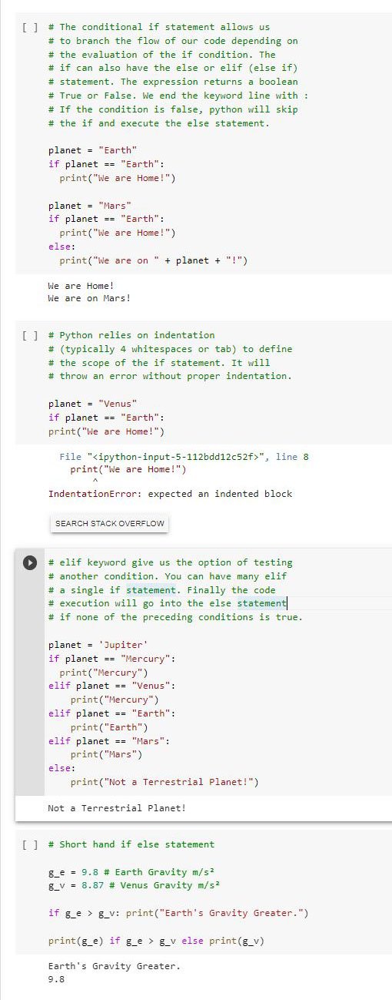

Core Python the Conditional if Statement
The conditional if statement allows us to branch the flow of our code depending on the evaluation of the if condition. The if statement can also include the else or else if statement. The expression returns a boolean True or False. We end the if, else, or else if line with a colon. If the condition is false, Python will skip the if and execute the else statement.
The if statement contains the usual logical operators from mathematics: the equal ==, not equal !=, less than <, less than or equal <=, greater than >, and greater than or equal operator >=.
Python relies on indentation. to define the scope of the if statement. Indentation is typically 4 whitespaces, or tab. It will throw an error, without proper indentation.
The else if keyword. give us the option of testing for another condition. We can have many else if in a single if statement. The code execution will go into the else statement if none of the preceding conditions is true.
We can see some examples of the if statement and the logical equal and greater than operators in this colab notebook. It’ll check to see if a planet is Earth, Mars, or terrestrial planet, and print out the appropriate respond using the print() method.
We can abbreviate the if, else statement similar to the last example of the gravity of Earth and Venus. We can also click below to view the companion short video on YouTube:
